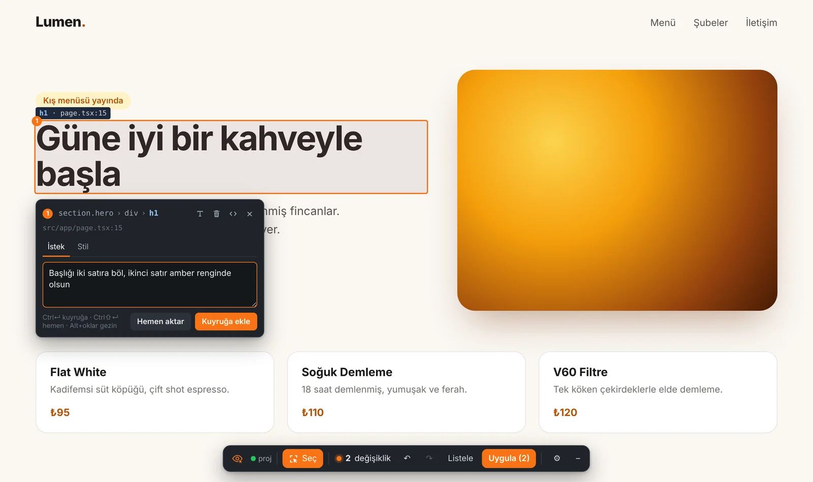
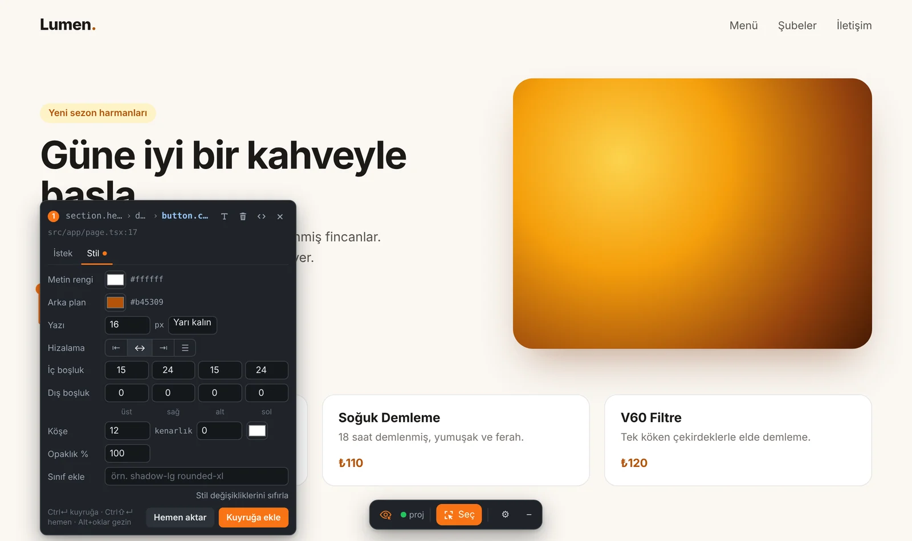
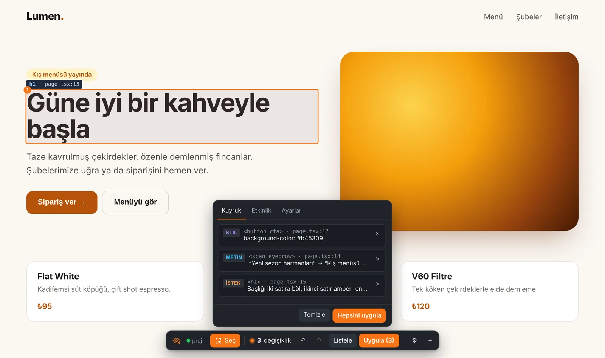
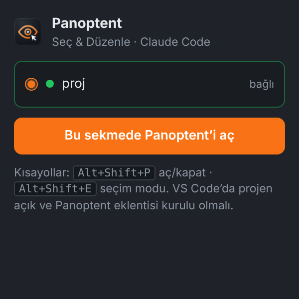
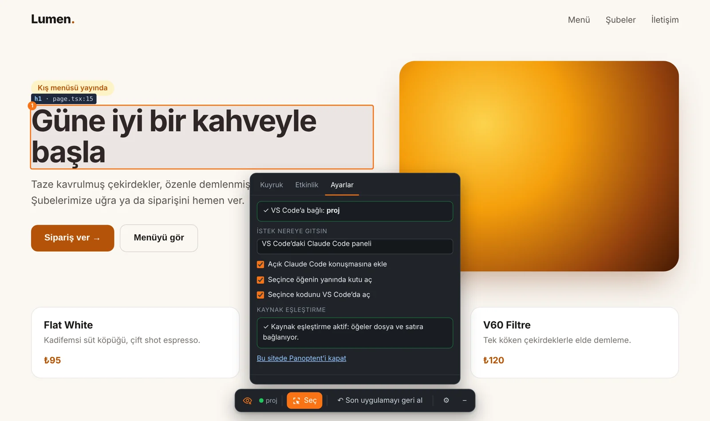
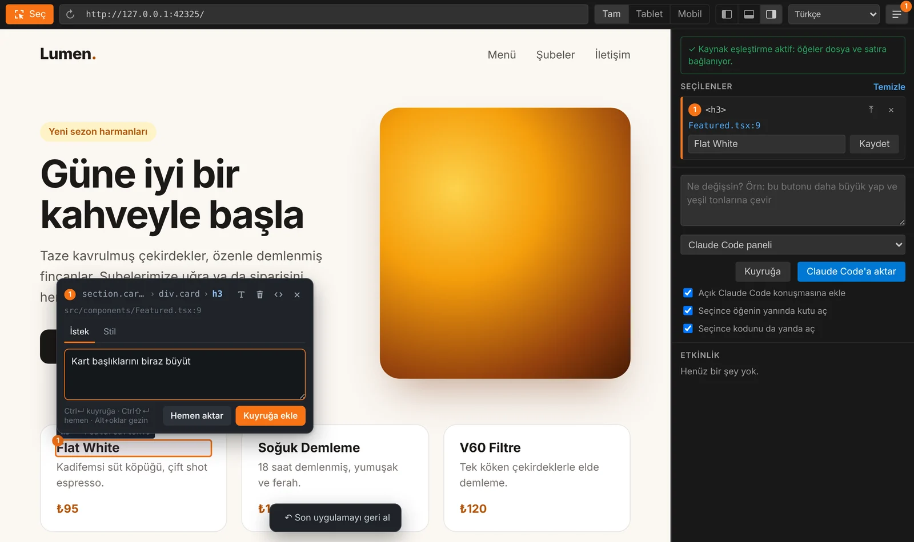
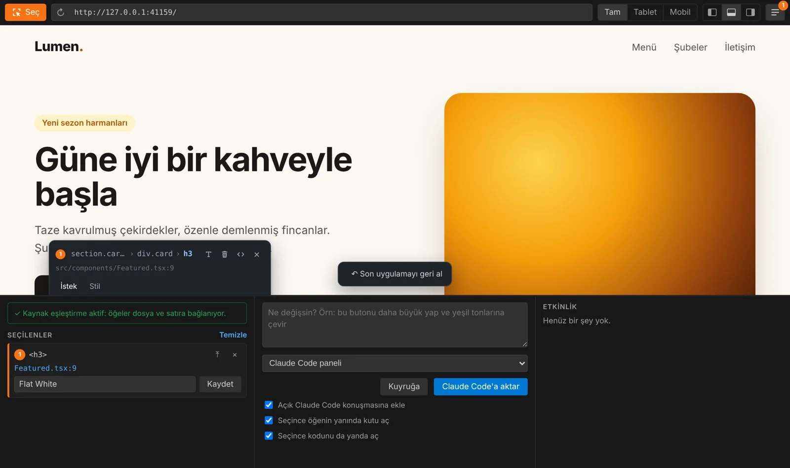

01Nasıl çalışırHow it works
Panoptent üç parçadan oluşur. Önizlemedeki seçim katmanı tıkladığın öğenin kaynak konumunu, metnini ve stillerini toplar. VS Code'daki Panoptent eklentisi değişiklikleri kuyrukta tutar, düz metinleri doğrudan dosyaya yazar ve kalanı tek bir istem olarak Claude Code'a verir. Claude dosyayı düzenleyince dev sunucunun hot reload'u sayfayı günceller.
Panoptent has three parts. The selection overlay in the preview collects the clicked element's source location, text and styles. The Panoptent extension in VS Code queues changes, writes plain text edits straight to disk, and hands the rest to Claude Code as a single prompt. When Claude edits the file, your dev server's hot reload updates the page.
← durumselect →
← status
← dosyalar@file →
← files
Ayrı bir API anahtarı gerekmez: istekler VS Code'daki Claude Code eklentisine (mevcut aboneliğin) gider. React/Next.js, Vue/Nuxt, Vite ve düz HTML projelerinde çalışır.
No separate API key: requests go to the Claude Code extension in VS Code, using your existing subscription. Works with React/Next.js, Vue/Nuxt, Vite and plain HTML.
02KurulumInstallation
Gereksinimler
Requirements
- VS Code 1.85 veya üstü
- Claude Code VS Code eklentisi, oturum açılmış
- Projenin dev sunucusu (
npm run dev,pnpm dev…) - İsteğe bağlı: Chrome 116+ (tarayıcı eklentisi için)
- VS Code 1.85 or newer
- Claude Code for VS Code, signed in
- Your project's dev server (
npm run dev,pnpm dev…) - Optional: Chrome 116+ for the browser extension
VS Code eklentisi
VS Code extension
- VS Code'da Extensions panelini aç (Ctrl/⌘+Shift+X), Panoptent ara ve Install'a bas. Ya da Marketplace sayfasından kur. Güncellemeler otomatik gelir.
- Sol menüde göz simgesi, sağ altta durum çubuğunda küçük bir göz belirir.
- In VS Code open Extensions (Ctrl/⌘+Shift+X), search Panoptent and press Install — or install from the Marketplace page. Updates arrive automatically.
- An eye icon appears in the activity bar, and a small eye in the status bar.
İnternetsiz kurulum: Releases'tan .vsix indir → Extensions → ⋯ → Install from VSIX…
Offline install: download the .vsix from Releases → Extensions → ⋯ → Install from VSIX…
Daha önce Visual Edit ya da Panoptes Edit adıyla kurduysan önce onu kaldır. Ayar adları panoptent.* olarak değişti; değiştirdiğin ayarları bir kez yeniden seçmen gerekir.
If you installed an earlier build named Visual Edit or Panoptes Edit, uninstall it first. Settings moved to panoptent.*, so re-apply any custom values once.
Chrome eklentisi (isteğe bağlı)
Chrome extension (optional)
- Releases'tan
panoptent-chrome-x.y.z.zipdosyasını indir ve kalıcı bir klasöre aç (Chrome bu klasörü kullanmaya devam eder). - Chrome'da
chrome://extensions→ sağ üstten Geliştirici modunu aç. - Paketlenmemiş öğe yükle → açtığın klasörü seç.
- Araç çubuğuna sabitlemek için yapboz simgesi → Panoptent → raptiye.
- Download
panoptent-chrome-x.y.z.zipfrom Releases and unzip it to a permanent folder (Chrome keeps using it). - Open
chrome://extensions→ enable Developer mode (top right). - Load unpacked → select the folder.
- Pin it: puzzle icon → Panoptent → pin.
Güncelleme: yeni zip'i aynı klasöre aç (üzerine yaz) ve chrome://extensions sayfasında Panoptent kartındaki ⟳'a bas.
Updating: unzip the new version over the same folder and press ⟳ on the Panoptent card in chrome://extensions.
03İlk kullanımFirst run
- Projeni VS Code'da aç ve dev sunucusunu başlat.
- Önerilir: Komut Paleti → Panoptent: code-inspector'ı Otomatik Kur, sonra dev sunucusunu yeniden başlat (ayrıntılar).
- Sol menüdeki göz → Önizlemeyi Aç → dev sunucusunun adresini onayla (ör.
http://localhost:3000). Ya da Chrome'da siteni aç → eklenti simgesi → Bu sekmede Panoptent'i aç. - Seç'e bas, bir öğeye tıkla, kutuya isteğini yaz, Ctrl/⌘+Enter ile kuyruğa ekle.
- Alttaki çubukta Uygula. İstek, VS Code'da açık Claude Code konuşmasına eklenir; orada Enter'a bas.
- Open your project in VS Code and start the dev server.
- Recommended: Command Palette → Panoptent: Set Up code-inspector Automatically, then restart the dev server (details).
- Activity bar eye → Open Preview → confirm your dev server URL (e.g.
http://localhost:3000). Or open your site in Chrome → extension icon → Turn on Panoptent in this tab. - Press Select, click an element, type your request, press Ctrl/⌘+Enter to queue it.
- Press Apply in the bottom bar. The request is added to your open Claude Code conversation — press Enter there.
Arayüz dili: Panoptent Türkçe ve İngilizce kullanılabilir. Varsayılan olarak VS Code'un görüntüleme dilini izler (desteklenmiyorsa İngilizce). Değiştirmek için: Komut Paleti → Panoptent: Dili Değiştir, Panoptent görünümündeki Dil bağlantısı, önizleme araç çubuğundaki dil seçimi, Chrome'da Ayarlar sekmesi ya da panoptent.language ayarı. Değişiklik anında uygulanır; Claude'a giden istemler de bu dilde yazılır.
Interface language: Panoptent is available in English and Turkish. By default it follows VS Code's display language (English if unsupported). To switch: Command Palette → Panoptent: Change Language, the Language link in the Panoptent view, the language select in the preview toolbar, the Settings tab in Chrome, or the panoptent.language setting. It switches live, and prompts sent to Claude are written in the same language.
04Seçme ve düzenlemeSelecting & editing

section.hero › div › h1), kaynak dosya ve istek alanı. Altta kuyrukta 2 değişiklik bekliyor.section.hero › div › h1), source file and a request field. Two changes are waiting in the queue below.| Ne yapmak istiyorsun | Nasıl |
|---|---|
| Öğe seçmek | Seç butonu, ya da seç modu kapalıyken Alt basılı tutup tıkla |
| Birden çok öğe | Shift ile tıkla; istek ve stil hepsine uygulanır |
| İstek yazmak | İstek sekmesi → Ctrl/⌘+Enter kuyruğa, Ctrl/⌘+Shift+Enter hemen gönder |
| Metni değiştirmek | Öğeye çift tıkla (veya kutudaki T), yaz, Enter. Esc iptal |
| Silmek | Kutudaki çöp kutusu. Önizlemede hemen gizlenir, Uygula'da koddan kaldırılır |
| Görsel değiştirmek | Bir <img> seç → görsel simgesi → dosya seç (en fazla 8 MB) veya adres yapıştır. Uygula'da public/panoptent/ altına kaydedilir |
| Üst / alt / yan öğe | Kutunun başlığındaki yoldan tıkla, ya da Alt + ok tuşları |
| Kodu görmek | Seçince kendiliğinden yanda açılır (odak önizlemede kalır); ayrıca kutudaki ‹› |
| Sadece mobil / tablet için | Mobil veya Tablet görünümündeyken kutudaki "Sadece … için" işaretini aç |
| Goal | How |
|---|---|
| Select an element | Select button, or hold Alt and click while select mode is off |
| Several elements | Shift-click; the request or style applies to all of them |
| Write a request | Request tab → Ctrl/⌘+Enter to queue, Ctrl/⌘+Shift+Enter to send now |
| Change text | Double-click the element (or T in the popover), type, Enter. Esc cancels |
| Delete | Trash icon. Hidden instantly in the preview, removed from code on Apply |
| Replace an image | Select an <img> → image icon → pick a file (max 8 MB) or paste a URL. Saved under public/panoptent/ on Apply |
| Parent / child / sibling | Click a segment of the path in the popover header, or Alt + arrow keys |
| See the code | Opens beside the preview automatically on select (focus stays in the preview); also ‹› in the popover |
| Mobile / tablet only | In Mobile or Tablet view, tick "Only for … view" in the popover |
Sadece mobil için işaretli değişiklikler Claude'a "yalnızca bu genişlikte geçerli olsun, responsive kırılım noktası kullan" notuyla gider. Chrome'da DevTools cihaz modunda pencere 480px altına inince bu seçenek kendiliğinden çıkar.
Mobile-only changes reach Claude with a note to apply them only at that width using a responsive breakpoint. In Chrome, the option appears automatically when the viewport is under 480px (DevTools device mode).
05Stil paneliStyle panel
Kutudaki Stil sekmesi, değerleri önizlemede anında dener; koda henüz hiçbir şey yazılmaz. Beğenince Kuyruğa ekle. Uygula'da Claude, denediğin değerleri projenin kendi yaklaşımına çevirir: Tailwind kullanıyorsan sınıflara, CSS modülü ya da scoped stil kullanıyorsan oraya. Satır içi style yazmaz.
The Style tab previews values live; nothing is written to code yet. Happy with it? Add to queue. On Apply, Claude translates the values into your project's own approach — Tailwind classes, CSS modules or scoped styles — never inline style.

Ayarlanabilenler: metin rengi, arka plan, yazı boyutu ve kalınlığı, hizalama, dört kenar için iç ve dış boşluk, köşe yuvarlaklığı, kenarlık kalınlığı ve rengi, opaklık ve sınıf ekle (ör. shadow-lg rounded-xl). Stil değişikliklerini sıfırla denemeyi geri alır.
Adjustable: text color, background, font size and weight, alignment, padding and margin per side, corner radius, border width and color, opacity, and Add class (e.g. shadow-lg rounded-xl). Reset style changes resets the trial.
06Kuyruk ve UygulaQueue & Apply
Emergent'teki akışın aynısı: sayfanın birçok yerine değişiklik ekle, kontrol et, sonra tek seferde uygula. Her değişiklik önizlemede görünür ama dosyaya yazılmaz.
The same flow as Emergent: add changes across the page, review them, then apply once. Every change is visible in the preview but not written to disk.

- ↶ / ↷ — kuyruktaki son işlemi geri al / yinele (Ctrl/⌘+Z, Ctrl/⌘+Shift+Z)
- Listele — kuyruğu göster; satırları tek tek çıkar
- Temizle — hepsini at, önizlemeyi eski hâline getir
- Uygula — metin değişiklikleri AI kullanılmadan doğrudan dosyaya yazılır; geri kalanı tek bir istem olarak Claude Code'a gider
- ↶ / ↷ — undo / redo the last queue action (Ctrl/⌘+Z, Ctrl/⌘+Shift+Z)
- List — show the queue; remove rows one by one
- Clear — drop everything and restore the preview
- Apply — text edits are written straight to disk without AI; everything else goes to Claude Code as one prompt
Token tasarrufu: öğe dosya:satır olarak verildiği için Claude arama yapmaz; metinler AI'sız yazılır; stil denemeleri Claude'a gitmez; beş değişiklik beş ayrı mesaj yerine tek mesajda gider.
Token savings: elements arrive as file:line so Claude doesn't search; text edits skip the AI; style trial-and-error never reaches Claude; five changes go in one message instead of five.
Kuyruk, sayfayı yenilesen de kaybolmaz ve önizlemede yeniden uygulanır.
The queue survives page reloads and is re-applied to the preview.
07Claude Code'a gönderimSending to Claude Code
İki mod var. Varsayılan olan, VS Code'daki Claude Code panelidir:
There are two modes. The default is the Claude Code panel in VS Code:
Claude Code paneli (önerilen)
İstek .claude/panoptent/istek-PT-….md dosyasına yazılır (git'e girmez) ve açık konuşmanın giriş kutusuna @ ile eklenir. Sen Enter'a basarsın; izinler ve diff incelemesi alıştığın panelde olur. İstem ayrıca panoya kopyalanır.
Claude Code panel (recommended)
The request is written to .claude/panoptent/istek-PT-….md (git-ignored) and @-mentioned into your open conversation. You press Enter; permissions and diff review stay in the panel you know. The prompt is also copied to the clipboard.
Arka planda (CLI)claude -p proje klasöründe çalışır, ilerleme (okudu, düzenledi…) Panoptent panelinde ve Chrome'da akar. Terminalde claude yoksa Claude Code eklentisinin içindeki kopya kullanılır. Varsayılan izin modu acceptEdits.
Background (CLI)
Runs claude -p in the project folder; progress (read, edited…) streams into the Panoptent panel and Chrome. If claude isn't on PATH, the copy bundled with the Claude Code extension is used. Default permission mode: acceptEdits.
Açık Claude Code konuşmasına ekle işaretini kaldırırsan her istek yeni bir Claude Code sekmesinde, önceden doldurulmuş olarak açılır.
Untick Add to the open Claude Code conversation to open each request in a new, pre-filled Claude Code tab instead.
Tasarım kuralları. Projede design.md gibi bir tasarım dosyası varsa Panoptent her isteğe "bu dosyadaki kurallara uy" satırını ekler; Claude dosyayı konuşma başına bir kez okur. Dosyayı paneldeki Tasarım kuralları satırından (Chrome'da Ayarlar sekmesinden) seçebilir ya da kapatabilirsin.
Design rules. If the project has a design file such as design.md, Panoptent adds a "follow the rules in this file" line to every request; Claude reads the file once per conversation. Pick another file or turn it off from the Design rules row in the panel (in Chrome: the Settings tab).
Gönderilen tam istem her zaman Output → Panoptent kanalında görünür.
The exact prompt is always visible in Output → Panoptent.
MCP sunucusu: her yapay zekâ aracından kullanMCP server: use it from any AI agent
Panoptent yerel bir MCP sunucusu da açar. Böylece terminaldeki Claude Code, Cursor, Windsurf ya da MCP destekleyen başka bir araç, seçtiğin öğeleri ve kuyruğu kendisi okur; sohbetin ortasında “seçtiğim butonu büyüt” demen yeterli olur. Uygula akışı istersen aynen kalır; istersen aşağıdaki MCP gönderim seçeneğini kullanırsın.
Panoptent also runs a local MCP server. Claude Code in the terminal, Cursor, Windsurf or any other MCP client can then read your selection and queue itself; in the middle of a conversation just say “make the selected button bigger”. Keep the usual Apply flow, or use the MCP send option below.
Bağlamak için Komut Paleti → Panoptent: Claude Code'u Bağla (MCP); aşağıdaki komutu senin yerine bu proje için çalıştırır. Elle yapmak istersen Panoptent: MCP Bağlantı Komutunu Kopyala ile kopyalayıp projendeki bir terminale yapıştır:
To connect: Command Palette → Panoptent: Connect Claude Code (MCP); it runs the command below for this project. To do it by hand, use Panoptent: Copy MCP Connect Command and paste it in a terminal in your project:
claude mcp add --transport http panoptent http://127.0.0.1:47821/mcpCursor, Windsurf ve diğerleri için bu adresi HTTP (streamable) türünde bir MCP sunucusu olarak ekle. Birden fazla VS Code penceresi açıksa her biri sıradaki portu alır (47822, …); komut doğru portu kopyalar.
For Cursor, Windsurf and others, add the same address as an HTTP (streamable) MCP server. With several VS Code windows open, each takes the next port (47822, …); the command copies the right one.
| Araç | Tool | Ne döndürür | Returns |
|---|---|---|---|
get_selection | Seçili öğeler: dosya ve satır, bileşen zinciri, seçici, hesaplanmış stiller, HTMLSelected elements: file and line, component chain, selector, computed styles, HTML | ||
get_queue | Kuyrukta bekleyen değişiklikler (istek, stil, metin, silme, görsel) ve hedefleriPending queued changes (request, style, text, delete, image) and their targets | ||
get_page_context | Çalışma alanı, sayfa adresi, ekran genişliği, seçim ve kuyruk sayılarıWorkspace, page URL, viewport, selection and queue counts | ||
get_apply | Uygula ile gönderilen değişiklik paketinin (PT-…) tam talimatıFull instructions for a change set sent with Apply (PT-…) | ||
mark_applied | Claude işini bitirdiğini bildirir; doğrudan uygulanan girdiler kuyruktan düşerClaude reports it is done; entries applied directly leave the queue |
Gönderim yeri: Claude Code (MCP). Bu seçenekle Uygula istek dosyası eklemez. Claude Code'a yapıştıracağın tek satırlık bir komut kopyalar (Panoptent değişiklik paketi PT-…’i uygula…); Claude ayrıntıları get_apply ile alır, bitince mark_applied çağırır. Geri alma aynen çalışır. Uygula'ya hiç basmadan Claude Code'a /mcp__panoptent__apply_queue yazarsan tüm kuyruk doğrudan uygulanır.
Canlı mod: /panoptent live. Panoptent: Claude Code'u Bağla (MCP) komutu Claude Code'a bir /panoptent komutu da kurar. Claude Code'a bir kez /panoptent live yaz: Claude bekler, sen önizlemede ya da Chrome'da Uygula'ya her bastığında değişiklik paketi doğrudan o konuşmaya gider, Claude düzenler ve sıradakini bekler. Hiçbir şey yapıştırman gerekmez. Durdurmak için Claude Code'da Esc. Ayrıca /panoptent apply kuyruğu uygular, /panoptent selection … seçili öğelerle istediğini yapar.
Send to: Claude Code (MCP). With this option Apply doesn't attach a request file. It copies a one-line command for your Claude Code conversation (Apply the Panoptent change set PT-…); Claude fetches the details with get_apply and calls mark_applied when done. Undo works as usual. Or skip Apply entirely: type /mcp__panoptent__apply_queue in Claude Code to apply the whole queue.
Live mode: /panoptent live. Panoptent: Connect Claude Code (MCP) also installs a /panoptent command for Claude Code. Type /panoptent live once: Claude waits, and every time you press Apply in the preview or in Chrome the change set goes straight to that conversation; Claude makes the edits and waits for the next one. Nothing to paste. Press Esc in Claude Code to stop. Also: /panoptent apply applies the queue, /panoptent selection … works on the selected elements.
08Geri almaUndo
↶ Son uygulamayı geri al, son Uygula'da yalnızca Panoptent'in ve onun gönderdiği isteğin yaptığı değişiklikleri geri alır.
↶ Undo last apply reverts only what Panoptent and the request it sent changed in the last Apply.
- Her Uygula bir kimlik taşır (
PT-…) ve bu kimlik Claude'a giden isteğe yazılır. - Claude Code her konuşmayı ve her dosya düzenlemesinin tam yamasını kendi kayıt dosyasına yazar. Panoptent kimliği bulur, o istekten bir sonraki mesajına kadarki düzenlemeleri alır.
- Bu düzenlemeler, Panoptent'in kendi yazdığı metinler ve kaydettiği görsellerle birlikte satır satır tersine uygulanır. Önce etkilenecek dosyaları gösteren bir onay penceresi çıkar.
- Each Apply carries an id (
PT-…) that is written into the prompt sent to Claude. - Claude Code logs every conversation with the full patch of each file edit. Panoptent finds the id and takes the edits made from that request up to your next message.
- Those edits — plus text Panoptent wrote and images it saved — are reversed hunk by hunk, after a confirmation dialog listing the affected files.
| Geri alınır | Dokunulmaz |
|---|---|
| O istekte Claude'un yaptığı düzenlemeler ve oluşturduğu dosyalar (çöpe taşınır), Panoptent'in doğrudan yazdığı metinler, kaydettiği görseller | Senin elle yaptığın değişiklikler (aynı dosyada olsa bile), aynı konuşmada sonraki istekler, başka işler, git geçmişi |
| Reverted | Left alone |
|---|---|
| Edits Claude made for that request and files it created (moved to trash), text Panoptent wrote, images it saved | Your manual edits (even in the same file), later requests in the same conversation, other work, git history |
Claude'un değiştirdiği satırları sonradan sen de değiştirdiysen o dosya atlanır ve onay penceresinde gösterilir. Claude'un terminal komutlarıyla yaptığı değişiklikler izlenemediği için geri alınmaz. Geri alma kayıtları VS Code penceresi açık kaldığı sürece tutulur (son 15 uygulama).
If you later edited the same lines Claude changed, that file is skipped and listed in the dialog. Changes Claude made via terminal commands can't be tracked and aren't reverted. Undo records live as long as the VS Code window (last 15 applies).
09Chrome eklentisiChrome extension
Aynı deneyimi kendi Chrome'unda kullanmanı sağlar: giriş yaptığın sayfalar, eklentilerin, DevTools ve gerçek cihaz emülasyonu yanında. Düzenlemeyi yine VS Code'daki Panoptent ve Claude Code yapar.
Use the same experience in your own Chrome: logged-in pages, your extensions, DevTools and real device emulation. The editing is still done by Panoptent and Claude Code in VS Code.


Bağlanma (bir kez)
Pairing (once)
- VS Code'da projen açık olsun (sağ altta göz simgesi = köprü hazır).
- Chrome'da dev siteni aç → eklenti simgesi → Bu sekmede Panoptent'i aç (Alt+Shift+P).
- VS Code'da "Chrome bağlanmak istiyor" penceresi → İzin ver. Chrome bir anahtar saklar; sonraki bağlantılar sorusuz olur.
- Have your project open in VS Code (eye in the status bar = bridge ready).
- Open your dev site in Chrome → extension icon → Turn on Panoptent in this tab (Alt+Shift+P).
- VS Code asks "Chrome wants to connect" → Allow. Chrome stores a key; later connections are silent.
Sayfadaki çubuk
The in-page bar
Bağlantı durumu, Seç (Alt+Shift+E), kuyruk sayısı, ↶ ↷, Listele, Uygula, Son uygulamayı geri al, ⚙ ayarlar ve – ile küçültme (sağ altta küçük bir göze dönüşür). Logoya basınca Kuyruk / Etkinlik / Ayarlar paneli açılır.
Connection status, Select (Alt+Shift+E), queue count, ↶ ↷, List, Apply, Undo last apply, ⚙ settings and – to minimize (collapses to a small eye bottom-right). Click the logo for the Queue / Activity / Settings drawer.
Dil
Language
Çekmecedeki Ayarlar sekmesinde Dil seçimi var: VS Code ayarı (otomatik), English, Türkçe. Bağlıyken Chrome, VS Code'daki panoptent.language ayarını izler (orada değiştirirsen sayfadaki çubuk da anında değişir); bağlı değilken kendi seçimini ya da tarayıcının dilini kullanır. Eklenti penceresi de aynı dili izler.
The drawer's Settings tab has a Language select: VS Code setting (auto), English, Türkçe. Once connected, Chrome follows the panoptent.language setting in VS Code (change it there and the in-page bar switches instantly); when not connected it uses its own choice or the browser language. The popup follows the same language.
Birden fazla VS Code penceresi
Several VS Code windows
Her pencere kendi portunu açar (47811–47820). Chrome, seçtiğin öğenin dosya yoluna bakarak doğru pencereyi kendisi seçer; istersen eklenti penceresinden ya da Ayarlar sekmesinden değiştirebilirsin.
Each window opens its own port (47811–47820). Chrome picks the right window from the selected element's file path; you can switch it in the popup or the Settings tab.
localhost dışındaki adresler
Non-localhost addresses
Eklenti localhost, 127.0.0.1 ve *.localhost adreslerinde hazır bekler. Başka bir adreste (ör. ağdaki test sunucusu) eklenti simgesinden açabilirsin; sayfayı yeniledikten sonra yeniden açman gerekebilir.
The extension is ready on localhost, 127.0.0.1 and *.localhost. On other hosts (e.g. a staging server on your network) open it from the extension icon; you may need to re-open it after a reload.
10code-inspector ile kesin eşleştirmeExact mapping with code-inspector
code-inspector-plugin, geliştirme sırasında her öğeye data-insp-path="src/app/page.tsx:17:9:button" gibi görünmez bir etiket ekler. Panoptent bunu okuyarak Claude'a "şu dosyanın şu satırı" der; Claude aramaya zaman ve token harcamaz. Yalnızca geliştirme modunda çalışır, canlı siteyi etkilemez.
code-inspector-plugin adds an invisible tag like data-insp-path="src/app/page.tsx:17:9:button" to each element during development. Panoptent reads it and tells Claude "this file, this line" — no searching, fewer tokens. Dev mode only; production builds are untouched.
Otomatik kurulum
Automatic setup
Komut Paleti → Panoptent: code-inspector'ı Otomatik Kur (ya da paneldeki Otomatik kur). Frontend klasörünü bulur (birden çoksa sorar), paketi doğru paket yöneticisiyle (npm / pnpm / yarn / bun) kurar ve yapılandırmayı Panoptent'le çakışmayacak ayarlarla Claude'a düzenletir. Sonra dev sunucusunu yeniden başlat; "✓ Kaynak eşleştirme aktif" görünmeli.
Command Palette → Panoptent: Set Up code-inspector Automatically (or Set up automatically in the panel). It finds your frontend folder (asks if there are several), installs the package with the right package manager (npm / pnpm / yarn / bun), and has Claude update the config with Panoptent-friendly options. Restart the dev server; you should see "✓ Source mapping is active".
Elle kurulum
Manual setup
npm i -D code-inspector-plugin// vite.config.ts
import { codeInspectorPlugin } from 'code-inspector-plugin';
export default defineConfig({
plugins: [
codeInspectorPlugin({ bundler: 'vite', hotKeys: false, showSwitch: false, hideConsole: true }),
// react() / vue() …
],
});// next.config.ts
import type { NextConfig } from 'next';
import { codeInspectorPlugin } from 'code-inspector-plugin';
const opts = { hotKeys: false, showSwitch: false, hideConsole: true } as const;
const nextConfig: NextConfig = {
turbopack: { rules: codeInspectorPlugin({ bundler: 'turbopack', ...opts }) },
webpack: (config) => {
config.plugins.push(codeInspectorPlugin({ bundler: 'webpack', ...opts }));
return config;
},
};
export default nextConfig;// next.config.js
const { codeInspectorPlugin } = require('code-inspector-plugin');
module.exports = {
webpack: (config) => {
config.plugins.push(
codeInspectorPlugin({ bundler: 'webpack', hotKeys: false, showSwitch: false, hideConsole: true }),
);
return config;
},
};// nuxt.config.ts
import { codeInspectorPlugin } from 'code-inspector-plugin';
export default defineNuxtConfig({
vite: {
plugins: [codeInspectorPlugin({ bundler: 'vite', hotKeys: false, showSwitch: false, hideConsole: true })],
},
});hotKeys: false, code-inspector'ın kendi Shift+Alt tık kısayolunu kapatır; Panoptent zaten seçince kodu açtığı için gerek kalmaz ve çakışma olmaz. hideDomPathAttr seçeneğini kullanma, Panoptent o etiketi okuyor.
hotKeys: false disables code-inspector's own Shift+Alt click shortcut — Panoptent already opens the code on select, so there's no conflict. Do not use hideDomPathAttr; Panoptent reads that attribute.
code-inspector olmadan da çalışır: React 18 ve öncesinde React'in geliştirme bilgisi, Vue'da bileşen dosyası kullanılır; hiçbiri yoksa Claude öğeyi metin, sınıf ve bileşen adlarından arar. Angular ve Blazor/Razor desteklenmez ama Panoptent yine çalışır.
It also works without code-inspector: React ≤18 dev info and Vue component files are used; otherwise Claude searches by text, classes and component names. Angular and Blazor/Razor aren't supported by code-inspector, but Panoptent still works.
11VS Code paneliThe VS Code panel

- Panel konumu: sağ üstteki sol / alt / sağ simgeleri. Altta konumlanınca panel üç sütuna bölünür.
- Boyut: ayırıcıyı sürükle; çift tık paneli gizler.
- Gizle/göster: ☰ (rozet bekleyen değişiklik sayısını gösterir).
- Ekran genişliği: Tam / Tablet (1024px) / Mobil (390px).
- Hızlı metin: seçilenler kartındaki metin kutusu + Kaydet doğrudan dosyaya yazar.
- Dil: araç çubuğundaki dil seçimi (Otomatik (VS Code) / English / Türkçe). Panel, sayfa üstü araçlar ve bağlı Chrome anında değişir.
- Dock: left / bottom / right icons top-right. Docked at the bottom, the panel splits into three columns.
- Size: drag the splitter; double-click hides the panel.
- Hide/show: ☰ (badge shows pending changes).
- Viewport: Full / Tablet (1024px) / Mobile (390px).
- Quick text: the field in a selection card + Save writes straight to the file.
- Language: the language select in the toolbar (Auto (VS Code) / English / Türkçe). The panel, the page overlay and connected Chrome tabs switch instantly.

12AyarlarSettings
VS Code → Ayarlar → "Panoptent" ile ara.
VS Code → Settings → search "Panoptent".
| Ayar | Setting | Varsayılan | Default | Açıklama | Description |
|---|---|---|---|---|---|
panoptent.language | auto | Arayüz dili: auto (VS Code'un görüntüleme dilini izler), en veya tr. Claude'a giden istemler de bu dilde yazılırInterface language: auto (follows VS Code's display language), en or tr. Prompts sent to Claude use it too | |||
panoptent.sendTo | claudePanel | claudePanel (Claude Code paneli), cli (arka planda) veya mcp (Claude Code, MCP ile)claudePanel (Claude Code panel), cli (background) or mcp (Claude Code over MCP) | |||
panoptent.designFile | — | Claude'un uyacağı tasarım kuralları dosyası. Boş: otomatik (design.md, DESIGN.md, docs/design.md), off: kapalı. Paneldeki Tasarım kuralları satırından seçilirDesign rules file Claude follows. Empty: automatic (design.md, DESIGN.md, docs/design.md), off: disabled. Pick it from the Design rules row in the panel | |||
panoptent.openSourceOnSelect | true | Seçince kaynak dosyayı yanda açOpen the source file beside the preview on select | |||
panoptent.defaultUrl | http://localhost:3000 | İlk açılışta önerilen adresSuggested URL on first open | |||
panoptent.chromeBridge | true | Chrome eklentisi için yerel köprüLocal bridge for the Chrome extension | |||
panoptent.bridgePort | 47811 | Köprünün ilk denediği port (doluysa sonraki 9)First bridge port tried (then the next 9) | |||
panoptent.mcpServer | true | Yapay zekâ araçları için yerel MCP sunucusuLocal MCP server for AI agents | |||
panoptent.mcpPort | 47821 | MCP sunucusunun ilk denediği port (doluysa sonraki 9)First MCP port tried (then the next 9) | |||
panoptent.claudePath | claude | CLI modu için komut ya da tam yolCommand or full path for CLI mode | |||
panoptent.permissionMode | acceptEdits | CLI modunda Claude Code izin moduClaude Code permission mode in CLI mode | |||
panoptent.model | — | CLI modunda model (sonnet, opus…)Model in CLI mode (sonnet, opus…) | |||
panoptent.reloadAfterEdit | false | Her düzenlemeden sonra önizlemeyi tamamen yenileFully reload the preview after each edit |
13KısayollarShortcuts
| Kısayol | Shortcut | Ne yapar | Action |
|---|---|---|---|
| Ctrl/⌘+Shift+E | Seçim modu (VS Code önizlemesi)Select mode (VS Code preview) | ||
| Alt+Shift+E | Seçim modu (Chrome)Select mode (Chrome) | ||
| Alt+Shift+P | Bu sekmede Panoptent'i aç/kapat (Chrome)Toggle Panoptent on this tab (Chrome) | ||
| Alt+tıkclick | Seç modunu açmadan seçSelect without select mode | ||
| Shift+tıkclick | Seçime ekle / çıkarAdd to / remove from selection | ||
| Çift tıkDouble-click | Metni yerinde düzenleEdit text in place | ||
| Alt+↑ ↓ ← → | Üst / ilk alt / önceki / sonraki öğeParent / first child / previous / next element | ||
| Ctrl/⌘+Enter | Kuyruğa ekleAdd to queue | ||
| Ctrl/⌘+Shift+Enter | Hemen gönderSend now | ||
| Ctrl/⌘+Z / Shift+Z | Kuyrukta geri al / yineleUndo / redo in the queue | ||
| Esc | Kutuyu kapat, sonra seç modundan çıkClose popover, then exit select mode |
14Güvenlik ve gizlilikSecurity & privacy
- Her şey yerel. Panoptent'in kendi sunucusu yok; veri yalnızca bilgisayarındaki VS Code, Chrome ve Claude Code arasında dolaşır. Claude'a giden içerik, Claude Code'u normal kullanırken gidenle aynıdır.
- Köprü yalnızca
127.0.0.1üzerinde dinler ve yalnızca tarayıcı eklentisi kökenlerinden (chrome-extension://) bağlantı kabul eder. Normal web siteleri bağlanamaz. - İlk bağlantı onay ister. Onaylanan tarayıcıya bir anahtar verilir. Silmek için: Panoptent: Chrome Eşleştirmelerini Sil. Köprüyü tamamen kapatmak için
panoptent.chromeBridge. - MCP sunucusu da yalnızca
127.0.0.1üzerinde dinler, yalnızca seçimini ve kuyruğunu okur (bir de Claude'un işin bittiğini bildirmesine izin verir) ve web sayfalarından gelen istekleri (Originbaşlığı olanları) reddeder. Kapatmak içinpanoptent.mcpServer. - Sayfa kodu istek üretemez. Chrome'da değişiklikler yalnızca senin gerçek tıklaman ya da tuşa basmanla kabul edilir.
- Commit yok. Panoptent git geçmişine, dallara ya da staging alanına dokunmaz. İstek dosyaları
.claude/panoptent/altında, git'te yok sayılır. - CLI modu varsayılan olarak
acceptEditsile çalışır: dosya düzenlemelerine izin verir, diğer terminal komutlarını reddeder.
- Everything is local. Panoptent has no server of its own; data moves only between VS Code, Chrome and Claude Code on your machine. What reaches Claude is the same as when you use Claude Code directly.
- The bridge listens on
127.0.0.1only and accepts connections only from browser-extension origins (chrome-extension://). Regular websites can't connect. - First connection requires approval. The approved browser gets a key. Remove keys with Panoptent: Remove Chrome Pairings; disable the bridge with
panoptent.chromeBridge. - The MCP server also listens on
127.0.0.1only, only reads your selection and queue (and lets Claude mark changes as done), and refuses requests from web pages (those with anOriginheader). Turn it off withpanoptent.mcpServer. - Page scripts can't inject requests. In Chrome, changes are accepted only right after a real click or key press.
- No commits. Panoptent never touches git history, branches or the index. Request files live in
.claude/panoptent/, git-ignored. - CLI mode defaults to
acceptEdits: file edits allowed, other shell commands refused.
15Sorun gidermeTroubleshooting
Chrome: "VS Code bulunamadı"
- VS Code'da Panoptent 0.8+ kurulu ve pencere yenilenmiş mi (Developer: Reload Window)?
- VS Code'da bir proje klasörü açık mı? Köprü klasör olmadan başlamaz.
- VS Code'un sağ altında göz simgesi var mı? Tıklayınca port ve bağlı tarayıcı sayısı görünür.
panoptent.chromeBridgekapalı olabilir.
Chrome: "VS Code not found"
- Is Panoptent 0.8+ installed and the window reloaded (Developer: Reload Window)?
- Is a project folder open? The bridge doesn't start without one.
- Is there an eye icon in the VS Code status bar? Click it to see the port and connected browsers.
panoptent.chromeBridgemay be turned off.
Claude Code'da "Session is already open. Your prompt was not applied"
Eski sürümlerde görülüyordu. 0.4.1'den beri istek açık konuşmaya @ referansıyla eklenir. Hâlâ görüyorsan güncelle. Kutuya bir şey gelmezse istem panodadır: Claude Code kutusuna Ctrl/⌘+V.
Claude Code: "Session is already open. Your prompt was not applied"
That came from older builds. Since 0.4.1 the request is @-mentioned into the open conversation. If nothing appears in the input, the prompt is on your clipboard — paste it with Ctrl/⌘+V.
"Kaynak eşleştirme yok" uyarısı
code-inspector kurulu değil ya da dev sunucusu yeniden başlatılmadı. Otomatik kurulum'u çalıştır, sunucuyu yeniden başlat, önizlemede ↻.
"No source mapping" warning
code-inspector isn't installed or the dev server wasn't restarted. Run the automatic setup, restart the server, press ↻ in the preview.
VS Code önizlemesi: "Dev sunucusuna ulaşılamadı"
Adresteki portta çalışan bir sunucu yok. Dev sunucusunu başlat; adres çubuğuna doğru adresi yazıp Enter. Vite genelde 5173, Next 3000, Nuxt 3000, Angular 4200.
VS Code preview: "Could not reach the dev server"
Nothing is listening on that port. Start the dev server, type the right URL in the address bar and press Enter. Vite usually uses 5173, Next 3000, Nuxt 3000, Angular 4200.
Giriş yaptığım sayfa VS Code önizlemesinde oturumu kaybediyor
Önizleme bir iframe olduğu için bazı çerez ayarları çalışmayabilir. Bu tür sayfalar için Chrome eklentisini kullan.
Logged-in pages lose the session in the VS Code preview
The preview is an iframe, so some cookie settings won't work. Use the Chrome extension for those pages.
Hızlı metin düzenleme "kaynak dosyada bulunamadı" diyor
Metin bir değişkenden, çeviri dosyasından ya da API'den geliyor. Aynı değişikliği İstek olarak gönder; Claude doğru yeri bulur.
Quick text edit says the text wasn't found in the source
The text comes from a variable, translation file or API. Send the same change as a request; Claude will find the right place.
Geri alma bir dosyayı atladı
Claude'un değiştirdiği satırları sonradan sen de değiştirdin; senin düzenlemeni ezmemek için o dosyaya dokunulmadı. Gerekirse Claude Code'un kendi geri sarma özelliğini ya da git'i kullan.
Undo skipped a file
You edited the same lines Claude changed, so the file was left alone to protect your work. Use Claude Code's own rewind or git if needed.
Sorun devam ederse Output → Panoptent çıktısıyla birlikte bir issue aç.
Still stuck? Open an issue with the Output → Panoptent log.
16GeliştirmeDevelopment
git clone https://github.com/ceritli/panoptent.git
cd panoptent
npm install
npm run typecheck
npm run package # → panoptent-x.y.z.vsix
npm run package:chrome # → panoptent-chrome-x.y.z.zipKlasörü VS Code'da açıp F5 ile eklentiyi geliştirme penceresinde çalıştırabilirsin. Chrome için npm run package:chrome sonrası chrome/ klasörünü paketlenmemiş olarak yükle (ortak seçim katmanı bu adımda kopyalanır).
Open the folder in VS Code and press F5 to run the extension in a development host. For Chrome, load chrome/ unpacked after npm run package:chrome (it copies the shared overlay into the folder).
| Dosya | Görev |
|---|---|
src/extension.ts | Komutlar, VS Code önizleme paneli |
src/engine.ts | Uygulama, Claude'a aktarma, geri alma (panel ve Chrome ortak) |
src/bridge.ts | Chrome köprüsü (WebSocket, eşleştirme) |
src/revert.ts | Claude Code kayıtlarından kesin geri alma |
src/proxy.ts | Dev sunucusu önündeki proxy, katman enjeksiyonu |
media/overlay.js | Seçim katmanı (VS Code ve Chrome ortak) |
chrome/ | Chrome eklentisi (MV3) |
| File | Role |
|---|---|
src/extension.ts | Commands, VS Code preview panel |
src/engine.ts | Apply, hand-off to Claude, undo (shared by panel and Chrome) |
src/bridge.ts | Chrome bridge (WebSocket, pairing) |
src/revert.ts | Precise undo from Claude Code session logs |
src/proxy.ts | Proxy in front of the dev server, overlay injection |
media/overlay.js | Selection overlay (shared by VS Code and Chrome) |
chrome/ | Chrome extension (MV3) |
Yeni sürüm: package.json ve chrome/manifest.json sürümünü artır, CHANGELOG.md'ye not ekle ve main'e gönder. GitHub Actions iki paketi derleyip vX.Y.Z sürümünü Releases'a koyar (istersen v* etiketi göndermek de çalışır).
To release: bump the version in package.json and chrome/manifest.json, add a CHANGELOG.md entry and push to main. GitHub Actions builds both packages and publishes release vX.Y.Z (pushing a v* tag works too).
Yeni dil eklemek
Adding a language
Metinler kullanıldıkları dosyada durur; İngilizce her eksik anahtar için yedek dildir. Yeni bir dil için: media/i18n.js (çekirdek metinler ve LANGS listesi); media/overlay.js, media/panel.js, chrome/content.js ve chrome/popup.js başındaki PanoptentI18n.add({ en, tr }) bloklarına yeni bir blok; src/*.ts içindeki addStrings blokları (ve src/i18n.ts'teki dil listesi); package.nls.<dil>.json; chrome/_locales/<dil>/messages.json; kurulum rehberi için media/SETUP.<dil>.md. Son olarak package.json'daki panoptent.language seçeneklerine ekle.
Strings live next to the code that uses them; English is the fallback for any missing key. For a new language add: media/i18n.js (core strings and the LANGS list); a block in the PanoptentI18n.add({ en, tr }) calls at the top of media/overlay.js, media/panel.js, chrome/content.js and chrome/popup.js; the addStrings blocks in src/*.ts (and the language list in src/i18n.ts); package.nls.<lang>.json; chrome/_locales/<lang>/messages.json; and media/SETUP.<lang>.md for the setup guide. Finally add it to the panoptent.language options in package.json.
Katkıda bulun
Contributing
Her türlü katkıya açığız: hata bildirimi, fikir, belge düzeltmesi, yeni dillere çeviri, ekran görüntüsü, test ve kod. Önceden izin istemene gerek yok; issue aç ya da main'e pull request gönder. Ayrıntılar: CONTRIBUTING.md.
Contributions of every kind are welcome: bug reports, ideas, docs fixes, translations into new languages, screenshots, tests and code. No need to ask first — open an issue or send a pull request against main. Details: CONTRIBUTING.md.